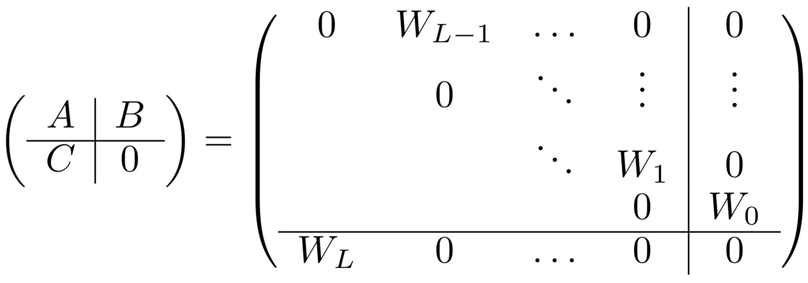
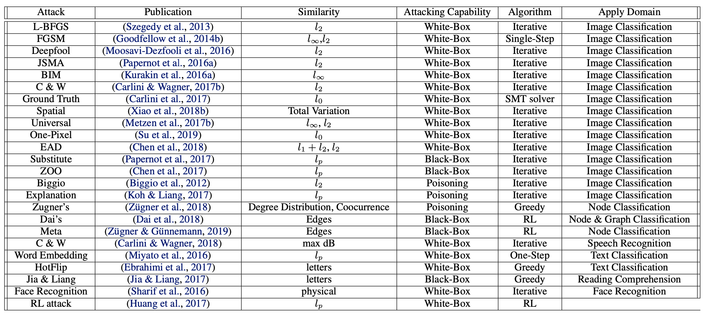
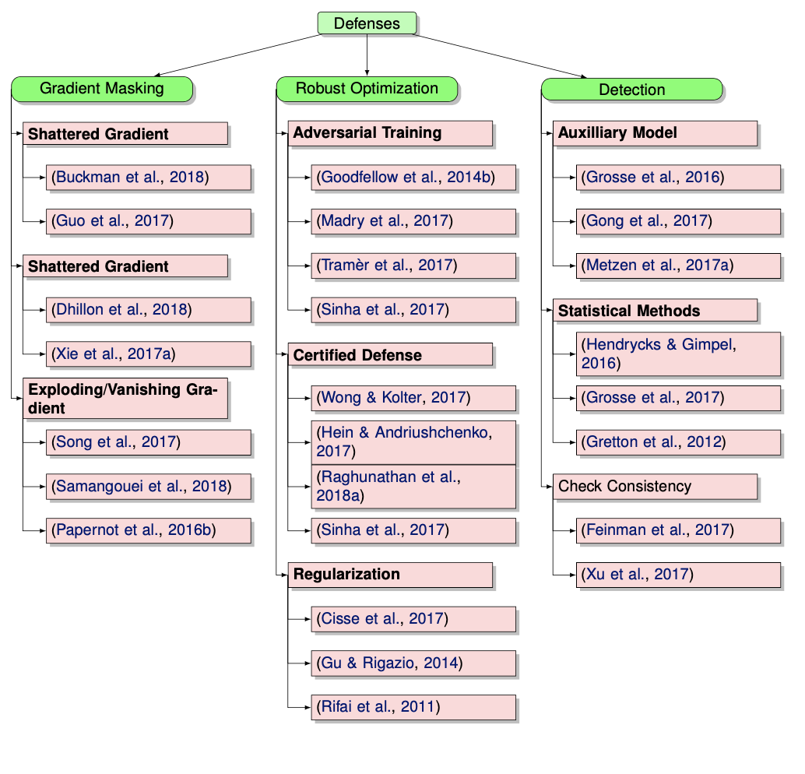

dl theory
view markdownDeep learning theory is a complex emerging field - this post contains links displaying some different interesting research directions
theoretical studies
DNNs display many surprising properties
- surprising: more parameters yields better generalization
- surprising: lowering training error should be harder
Many things seem to contribute to the inductive bias of DNNs: SGD, dropout, early stopping, resnets, convolution, more layers…all of these are tangled together and many things correlate with generalization error…what are the important things and how do they contribute?
some more concrete questions:
- what is happening when training err stops going down but val err keeps going down (interpolation regime)?
- what are good statistical markers of an effectively trained DNN?
- how far apart are 2 nets?
functional approximation
- dnns are very hard to study in the parameter space (e.g. swapping two parameters changes things like the Hessian), easier to to study in the function space (e.g. the input-output relationship)
- nonlinear approximation (e.g. sparse coding) - 2 steps
- construct a dictionary function (T)
- learn linear combination of the dictionary elements (g)
- background
-
$L^2$ function (or function space) is square integrable: $ f ^2 = \int_X f ^2 d\mu$, and $ f $ is its $L_2$-norm - Hilbert space - vector space w/ additional structure of inner product which allows length + angle to be measured
- complete - there are enough limits in the space to allow calculus techniques (is a complete metric space)
-
- composition allows an approximation of a function through level sets (split it up and approximate on these sets) - Zuowei Shen (talk, slides)
- composition operation allows an approximation of a function f through level sets of f –
- one divides up the range of f into equal intervals and approximate the functions on these sets
- nonlinear approximation via compositions (shen 2019)
- how do the weights in each layer help this approximation to be more effective?
- here are some thoughts – If other layers are like the first layer, the weights “whiten” or make the inputs more independent or random projections – that is basically finding PC directions for low-rank inputs.
- are the outputs from later layers more or less low - rank?
- I wonder how this “whitening” helps level set estimation…
- takagi functions
- nonlinear approximation and (deep) relu nets - also comes with slides
inductive bias=implicit regularization: gradient descent finds good minima
DL learns solutions that generalize even though it can find many which don’t due to its inductive bias.
- gd bousquet paper
- in high dims, local minima are usually saddles (ganguli)
- early stopping is very similar to ridge regression
- ridge regression: soln will lie in $p-dim$ row-space of X (span of the rows)
- when $\lambda \to 0$, will give us min-norm soln (basically because we project onto $col(X)$)
- early stopping in least squares
- if we initialize at 0, GD soln will always be in the row-space of X
- GD will converge to min-norm soln (any soln not in the row-space will necessarily have larger norm)
- similar to ridge (endpoints are the same) and can related their risks very closely when $\lambda = 1/t$, where $t$ is GD time iterate
- assume gradient flow: take step-size to 0
- srebro understanding over-parameterization
- ex. gunasekar et al 2017: unconstrained matrix completion
- grad descent on U, V yields min nuclear norm solution
- ex. soudry et al 2017
- sgd on logistic reg. gives hard margin svm
- deep linear net gives the same thing - doesn’t actually changed anything
- ex. gunaskar, 2018
- linear convnets give smth better - minimum l1 norm in discrete fourier transform
- ex. savarese 2019
- infinite width relu net 1-d input
- weight decay minimization minimizes derivative of TV
- ex. gunasekar et al 2017: unconstrained matrix completion
- implicit bias towards simpler models
- How do infinite width bounded norm networks look in function space? (savarese…srebro 2019)
- minimal norm fit for a sample is given by a linear spline interpolation (2 layer net)
- analytic theory of generalization + transfer (ganguli 19)
- deep linear nets learn important structure of the data first (less noisy eigenvectors)
- similar paper for layer nets
- datasets for measuring causality
- Inferring Hidden Statuses and Actions in Video by Causal Reasoning - about finding causality in the video, not interpretation
- PL condition = Polyak-Lojawsiewicz condition guarantees global convergence of loca methods
-
$ \nabla f(x) ^2 \geq \alpha f(x) \geq 0$
-
semantic biases: what correlations will a net learn?
- imagenet models are biased towards texture (and removing texture makes them more robust)
- analyzing semantic robustness
- eval w/ simulations (reviewer argued against this)
- glcm captures superficial statistics
- deeper, unpruned networks are better against noise
- analytic theory of generalization + transfer (ganguli 19)
-
causality in dnns talk by bottou
- on mnist, color vs shape will learn color
- A mathematical theory of semantic development in deep neural networks
- Emergence of Invariance and Disentanglement in Deep Representations (achille & soatto 2018)
- information in the weights as a measure of complexity of a learned model (information complexity)
- IB Lagrangian between the weights of a network and the training data, as opposed to the traditional one between the activations and the test datum
- explains tradeoff between over/underfitting
-
On Dropout, Overfitting, and Interaction Effects in Deep Neural Networks (lengerich..caruana, 2020)
- use ANOVA to meaure 1st/2nd/3rd order effects and such
- approximate ANOVA decomp. using boosted trees of depth based on a particular order
- use ANOVA to meaure 1st/2nd/3rd order effects and such
- they find that increasing dropout rate forces nets to emphasize lower-order effects
- An Investigation of Why Overparameterization Exacerbates Spurious Correlations
- overparameterization can hurt test error on minority groups despite improving average test error when there are spurious correlations in the data
expressiveness: what can a dnn represent?
- complexity of linear regions in deep networks
- Bounding and Counting Linear Regions of Deep Neural Networks
- On the Expressive Power of Deep Neural Networks
- Deep ReLU Networks Have Surprisingly Few Activation Patterns
complexity + generalization: dnns are low-rank / redundant parameters
- measuring complexity
- functional decomposition (molnar 2019)
- decompose function into bias + first-order effects (ALE) + interactions
- 3 things: number of features used, interaction strength, main effect complexity
- functional decomposition (molnar 2019)
- parameters are redundant
- predicting params: weight matrices are low-rank, decompose into UV by picking a U
- pruning neurons
- circulant projection
- rethinking the value of pruning: pruning and training from scratch, upto 30% size
- Lottery ticket: pruning and training from initial random weights, upto 1% size (followup)
- rank of relu activations
- random weights are good
- singular values of conv layers
- T-Net: Parametrizing Fully Convolutional Nets with a Single High-Order Tensor
- generalization
nearest neighbor comparisons
- weighted interpolating nearest neighbors can generalize well (belkin…mitra 2018)
- Statistical Optimality of Interpolated Nearest Neighbor Algorithms
- nearest neighbor comparison
- nearest embedding neighbors
kernels
- To understand deep learning we need to understand kernel learning - overfitted kernel classifiers can still fit the data well
- original kernels (neal 1994) + (lee et al. 2018) + (matthews et al. 2018)
- infinitely wide nets and only top layer is trained
- corresponds to kernel $\text{ker}(x, x’) = \mathbb E_{\theta \sim W}[f(\theta, x) \cdot f(\theta, x’)]$, where $W$ is an intialization distr. over $\theta$
- neural tangent kernel (jacot et al. 2018)
- $\text{ker}(x, x’) = \mathbb E_{\theta \sim W} \left[\left < \frac{f(\theta, x)}{\partial \theta} \cdot \frac{f(\theta, x’)}{\partial \theta} \right> \right]$ - evolution of weights over time follows this kernel
- with very large width, this kernel is the NTK at initialization
- stays stable during training (since weights don’t change much)
- at initialization, artificial neural networks (ANNs) are equivalent to Gaussian processes in the infinite-width limit
- evolution of an ANN during training can also be described by a kernel (kernel gradient descent)
- different types of kernels impose different things on a function (e.g. want more / less low frequencies)
- gradient descent in kernel space can be convex if kernel is PD (even if nonconvex in the parameter space)
- understanding the neural tangent kernel (arora et al. 2019)
- method to compute the kernel quickly on a gpu
- $\text{ker}(x, x’) = \mathbb E_{\theta \sim W} \left[\left < \frac{f(\theta, x)}{\partial \theta} \cdot \frac{f(\theta, x’)}{\partial \theta} \right> \right]$ - evolution of weights over time follows this kernel
- Scaling description of generalization with number of parameters in deep learning (geiger et al. 2019)
- number of params = N
- above 0 training err, larger number of params reduces variance but doesn’t actually help
- ensembling with smaller N fixes problem
- the improvement of generalization performance with N in this classification task originates from reduced variance of fN when N gets large, as recently observed for mean-square regression
- On the Inductive Bias of Neural Tangent Kernels (bietti & mairal 2019)
- Kernel and Deep Regimes in Overparametrized Models (Woodworth…Srebro 2019)
- transition between kernel and deep regimes
- The HSIC Bottleneck: Deep Learning without Back-Propagation (Ma et al. 2019)
- directly optimize information bottleneck (approximated by HSIC) yields pretty good results
random projections
- sgd for polynomials
- deep linear better than just linear
- relation to bousquet - fitting random polynomials
- hierarchical sparse coding for images (can’t just repeat sparse coding, need to include input again)
- random projections in the brain….doing locality sensitive hashing (basically nearest neighbors)
implicit dl + optimization
- implicit deep learning (el ghaoui et al. 2019)
- $\hat y (u) = Cx + D u $, where $x = \phi(Ax + Bu)$
- here, $u$ is a new input
- $x$ is a hidden state which represents some hidden features (which depends on $u$)
- well-posedness - want x to be unique for a given u
- $A, B$ are matrices which let us compute $x$ given $u$
- $C, D$ help us do the final prediction (like the final linear layer)
- ex. feedforward nets
- consider net with $L$ layers
- $x_0 = u$
- $x_{l + 1} = \phi_l (W_l x_l)$
- $\hat y (u) = W_L x_L$
- rewriting in implicit form
- $x = (x_L, …, x_1)$ - concatenate all the activations into one big vector

- ex. $Ax + Bu= \begin{bmatrix} W_{L-1}x_{L-1} \ W_{L-2} x_{L-2} \ \vdots \ W_1x_1 \ \mathbf 0\end{bmatrix} + \begin{bmatrix} 0 \ 0 \ \vdots \ 0 \ W_0 u \end{bmatrix}$
- consider net with $L$ layers
- $\hat y (u) = Cx + D u $, where $x = \phi(Ax + Bu)$
- lifted neural networks (askari et al. 2018)
- can solve dnn $\hat y = \phi(W_2 \phi (W_1X_0))$ by rewriting using constraints:
- $X_1 = \phi(W_1 X_0)$
- $X_2 = \phi(W_2 X_1)$
- $\begin{align} &\min (y - \hat y)^2\s.t. X_1 &= \phi(WX_0)\X_2 &= \phi(WX_1)\end{align}$
- can be written using Lagrangian multipliers: $\min (y - \hat y)^2 + \lambda_1( X_1 - \phi(WX_0)) + \lambda_2(X_2 - \phi(WX_1))$
- can solve dnn $\hat y = \phi(W_2 \phi (W_1X_0))$ by rewriting using constraints:
- Fenchel Lifted Networks: A Lagrange Relaxation of Neural Network Training (gu et al. 2018)
- in the lifted setting above, can replace Lagrangian with simpler expression using Fenchel conjugates
- robust optimization basics
- immunize optimization problems against uncertainty in the data
- do so by having worst-case constraints (e.g. $a < 5, \forall a$)
- local robustness - maximize radius surrounding parameter subject to all constraints (no objective to maximize)
- global robustness - maximize objective subject to robustness constraint (trades off robustness with objective value)
- non-probabilistic robust optimization models (e.g. Wald’s maximin model: $\underset{x}{\max} \underset{u}{\min} f(x, u)$
- also are probabilistically robust optimization
- distributional robustness - using moments in the dl work
- ch 4 and ch10 of robust optimization book (bental, el ghaoui, & nemirovski 2009)
- Certifying Some Distributional Robustness with Principled Adversarial Training (sinha, namkoong, & duchi 2018)
- want to guarantee performance under adversarial input perturbations
- considering a Lagrangian penalty formulation of perturbing the underlying data distribution in a Wasserstein ball
- during training, augments model parameter updates with worst-case perturbations of training data
- little extra cost and achieves guarantees for smooth losses
- On Distributionally Robust Chance-Constrained Linear Programs (calafiore & el ghaoui 2006)
- linear programs where data (in the constraints) is random
- want to enforce the constraints up to a given prob. level
- can convert the prob. constraints into convex 2nd-order cone constraints
- under distrs. for the random data, can guarantee constraints
- Differentiable Convex Optimization Layers (agrawal et al. 2019)
statistical physics
- Statistical Mechanics of Deep Learning (bahri et al. 2019)
- what is the advantage of depth - connect to dynamical phase transitions
- there are several function which require only polynomial nodes in each layer for deep nets, but exponential for shallow nets
- what is the shape of the loss landscape - connect to random Gaussian processes, sping glasses, and jamming
- how to pick a good parameter initialization?
- bounding generalization error
- often, generalization bounds take the form $\epsilon_{test} \leq \epsilon_{train} + \frac {\mathcal C (\mathcal F)} p$, where $\mathcal C (\mathcal F)$ is the complexity of a function class and $p$ is the number of examples
- ex. VC-dimension, Rademacher complexity
- alternative framework: algorithmic stability - will generalize if map is stable wrt perturbations of the data $\mathcal D$
- altenative: PAC bounds suggest if distr. of weights doesn’t change much during training, generalization will be succesful
- often, generalization bounds take the form $\epsilon_{test} \leq \epsilon_{train} + \frac {\mathcal C (\mathcal F)} p$, where $\mathcal C (\mathcal F)$ is the complexity of a function class and $p$ is the number of examples
- deep linear networks
- student learns biggest singular values of the input-output correlation matrix $\Sigma = \sum_i y_i x_i^T$, so it learns the important stuff first and the noise last
- infinite-width limit
- if parameters are random, indcues a prior distribution $P(\mathcal F)$ over the space of functions
- in th limit of infinite width, this prior is Gaussian, with a specific correlation kernel
-
learning is similar to learning the Bayesian posterior $P(f data)$, but connecting this to sgd is still not clear
- what is the advantage of depth - connect to dynamical phase transitions
- Neural Mechanics: Symmetry and Broken Conservation Laws in Deep Learning Dynamics (kunin et al. 2020)
- no assumptions about DNN architecture or gradientflow
- instead, assumptions on symmetries embedded in a network’s architecture constrain training dynamics
- similar to Noether’s thm in physics
- can much better analytically describe learning dynamics
- weights have a differentiable symmetry in the loss if the loss doesn’t change under a certain differentiable transformation of the weights
- ex. translation symmetry - for layer before softmax, we get symmetries across weights that shift all outputs
- ex. scale symmetry - inputs to batch normalization are invariant to scaling
- ex. rescale symmetry - scaling up/down 2 things which multiply or add
- modeling discretization
empirical studies
interesting empirical papers
- modularity (“lottery ticket hypothesis”)
- contemporary experience is that it is difficult to train small architectures from scratch, which would similarly improve training performance - lottery ticket hypothesis: large networks that train successfully contain subnetworks that–when trained in isolation–converge in a comparable number of iterations to comparable accuracy
- ablation studies
- deep learning is robust to massive label noise
- are all layers created equal?
- Truth or backpropaganda? An empirical investigation of deep learning theory
adversarial + robustness
- robustness may be at odds with accuracy (madry 2019)
- adversarial training helps w/ little data but hurts with lots of data
- adversarially trained models have more meaningful gradients (and their adversarial examples actually look like other classes)
- Generalizability vs. Robustness: Adversarial Examples for Medical Imaging
- Towards Robust Interpretability with Self-Explaining Neural Networks
- Adversarial Attacks and Defenses in Images, Graphs and Text: A Review (xu et al. 2019)
- Adversarial examples are inputs to machine learning models that an attacker intentionally designed to cause the model to make mistakes
- threat models
- poisoning attack (insert fake samples into training data) vs. evasion attack (just evade at test time)
- targeted attack (want specific class) vs. non-targeted attack (just change the prediction)
- adversary’s knowledge
- white-box - adversary knows everything
- black-box - can only feed inputs and get outputs
- gray-box - might have white box for limited amount of time
- security evaluation
- robustness - minimum norm perturbation to change class
- adversarial loss - biggest change in loss within some epsilon ball


- AugMix: A Simple Data Processing Method to Improve Robustness and Uncertainty (hendrycks et al. 2020)
- do a bunch of transformations and average images to create each training image
- certifying robustness
- bound gradients of f around x - solve SDP for 2-layer net (raghunathan, steinhardt, & liang 2018, iclr)
- relax SDP and then applies to multilayer nets (raghunathan et al. 2018)
- improved optimizer for the SDP (dathathri et al. 2020)
- interval bound propagation - instead of passing point, pass an interval where it could be
- works well for word substitions (jia et al. 2019)
- RobEn - cluster words that are confusable + give them the same encoding when you train (jones et al. 2020)
- then you are robust to confusing the words
- bound gradients of f around x - solve SDP for 2-layer net (raghunathan, steinhardt, & liang 2018, iclr)
- unlabeled data + self-training helps
- training robust models has higher sample complexity than training standard models
- tradeoff between robustness and accuracy (raghunathann et al. 2020)
- adding valid data can hurt even in well-specified, convex setting
- robust self-training eliminates this tradeoff in linear regression
- sample complexity can be reduced with unlabeled examples (carmon et al. 2019)
- distributional robust optimization
- instead of minimizing training err, minimize maximum training err over different perturbations
- hard to pick the perturbation set - can easily be too pessimistic
- these things possibly magnify disparities
- larger models
- selective classification
- feature noise
- removing spurious features
- group DRO (sagawa et al. 2020) - maximize error for worst group
- need to add regularization to keep errors from going to 0
- training overparameterized models makes this problem worse
- abstain from classifying based on confidence (jones et al. 2020)
- makes error rates worse for worst group = selective classification can magnify disparities
- adding feature noise to each group can magnify disparities
- domain adaptation
- standard domain adaptation: labeled (x, y) in source and unlabeled x in target
- gradual domain adaptation - things change slowly over time, can use gradual self-training (kumar et al. 2020)
- In-N-Out (xie et al. 2020) - if we have many features, rather than using them all as features, can use some as features and some as targets when we shift, to learn the domain shift
tools for analyzing
- dim reduction: svcca, diffusion maps
- viz tools: bei wang
- visualizing loss landscape
- 1d: plot loss by extrapolating between 2 points (start/end, 2 ends)
- goodfellow et al. 2015, im et al. 2016
- exploring landscape with this technique
- 2d: plot loss on a grid in 2 directions
- important to think about scale invariance (dinh et al. 2017)
- want to scale direction vector to have same norm in each direction as filter
- use PCA to find important directions (ex. sample w at each step, pca to find most important directions of variance)
misc theoretical areas
- deep vs. shallow rvw
- probabilistic framework
- information bottleneck: tishby paper + david cox follow-up
- Emergence of Invariance and Disentanglement in Deep Representations
- manifold learning
comparing representations
simple papers
adam vs sgd
- svd parameterization rnn paper: inderjit paper
- original adam paper: kingma 15
- regularization via SGD (layers are balanced: du 18)
- marginal value of adaptive methods: recht 17
- comparing representations: svcca
- montanari 18 pde mean field view
- normalized margin bounds
memorization background
- memorization on single training example
- memorization in dnns
- “memorization” as the behavior exhibited by DNNs trained on noise, and conduct a series of experiments that contrast the learning dynamics of DNNs on real vs. noise data
- look at critical samples - adversarial exists nearby
- networks that generalize well have deep layers that are approximately linear with respect to batches of similar inputs
- networks that memorize their training data are highly non-linear with respect to similar inputs, even in deep layers
- expect that with respect to a single class, deep layers are approximately linear
- example forgetting paper
- secret sharing
- memorization in overparameterized autoencoders
- autoencoders don’t lean identity, but learn projection onto span of training examples = memorization of training examples
- sometimes output individual training images, not just project onto space of training images
- https://arxiv.org/pdf/1810.10333.pdf
- https://arxiv.org/pdf/1909.12362.pdf
- https://pdfs.semanticscholar.org/a624/6278cb5e2d0ab79fe20fe20a41c586732a11.pdf
- Auto-encoders: reconstruction versus compression
probabilistic inference
- multilayer idea
- equilibrium propagation
architecture search background
- ideas: nested search (retrain each time), joint search (make arch search differentiable), one-shot search (train big net then search for subnet)
bagging and boosting
- analyzing bagging (buhlmann and yu 2002)
- boosting with the L2 loss (buhlmann & yu 2003)
- boosting algorithms as gradient descent (mason et al. 2000)
basics
- good set of class notes
- demos to gain intuition
- colah
-
overview / reviews
- some people involved: nathan srebro, sanjeev arora, jascha sohl-dickstein, tomaso poggio, stefano soatto, ben recht, olivier bousquet, jason lee, simon shaolei du
- interpretability: cynthia rudin, rich caruana, been kim, nicholas papernot, finale doshi-velez
- neuro: eero simoncelli, haim sompolinsky